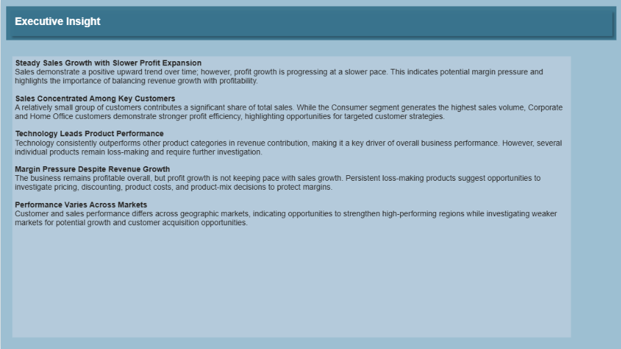
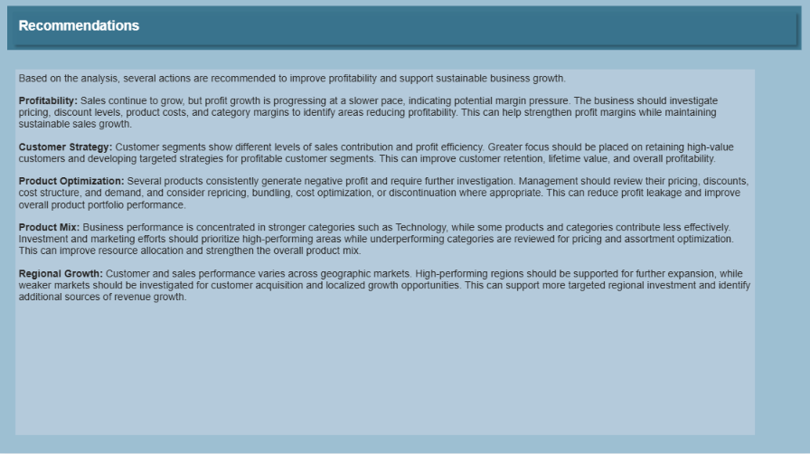

Project Overview
This project analyzes customer behavior, product performance, profitability, and time-based trends in an e-commerce context. The objective is to transform transactional data into a consolidated analytical view that helps decision-makers understand revenue drivers, customer value, product performance, profitability risks, and growth opportunities.
Project Objectives
The objective of this analysis is to understand how different customers and regions contribute to sales, profitability, and overall business growth. By identifying high-performing segments and trends, the business can make data-driven decisions to maximize revenue and improve customer targeting.
- Designed and developed an end-to-end Power BI dashboard solution.
- Built a data model (star schema) using transactional e-commerce data.
- Created key KPIs using DAX (Sales, Profit, Profit %, YoY Growth).
- Performed customer segmentation and product profitability analysis.
- Transformed raw data into actionable insights and business recommendations.
Business Problem
Management requires a clear view of customer and product performance across multiple dimensions. Without integrated analysis, it is difficult to identify high-value customer groups, top-performing products, loss-making items, margin pressure, geographic differences, and changes in performance over time.
Business Questions
- Which customer groups contribute most to sales and profit?
- Which products and categories drive performance?
- Where are loss-making products concentrated?
- How do performance and growth change over time?
- How does performance vary geographically?
Analytical Approach
Dashboard




This dashboard explores customer segmentation and performance by analyzing sales, profit, customer distribution, and geographic trends.
The results show that total business performance is strong, with $2.68M in sales and $307.42K in profit, but revenue is concentrated among a few top customers.
Monthly trends indicate stable growth, while the Corporate segment contributes the highest share of profit.
Regionally, the Central region leads in customer performance, revealing a benchmark for
expansion strategies in lower-performing markets. Overall, this dashboard supports data-driven decisions in customer targeting, profitability improvement, and regional growth planning.
This second page analyzes product sales, profitability, and growth trends. It shows that Technology products lead in sales, Consumer segments drive most orders, and a small group of products contributes the highest revenue. However, several loss-making products reduce overall profitability, highlighting opportunities for pricing optimization and product portfolio improvement.
Analytical solution
Business Recommendations
Business Value
The project demonstrates how Power BI can support customer targeting, pricing and profitability analysis, product portfolio decisions, performance monitoring, and regional growth planning. It also demonstrates an end-to-end analytical workflow from data preparation and modeling through KPI development, visualization, insight generation, and business recommendations.